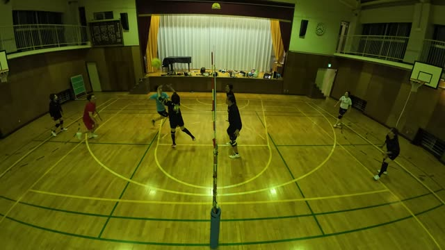
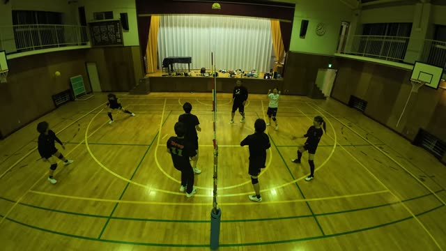
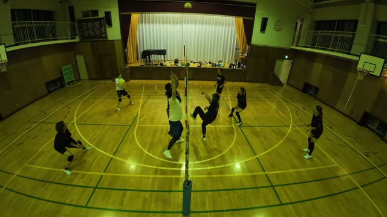

トスからアタックへ、つながって決まる場面がたくさんあった日。時刻をタップすると、その場面から動画が再生されます(ステージ側の動画です)。
ダイジェスト

28:5128:51 しょうさん の強いアタックをスーパーレシーブ。そのボールを るき が強烈なアタックで決めました。
52:13 バックトスを上げて、かずお のアタックにつなぎました。


14:1614:16 14:53 25:50 28:00 強烈なアタックが決まりました。25:50 は おおのさん のトスからです。60:47 では、長く続いたラリーをフェイントで終わらせました。

33:4333:43 せんせい のアタックが、あき の顔面にヒット。
もうひとつ、28:29 おおのさん のアタックを ゆい がなんとか当てて、下に落ちたかに見えたボールがあやさん の靴に当たって、奇跡的につながりました。(超珍プレー)
| 時刻 | トス(上げた人) | アタック(決めた人) |
|---|---|---|
| 4:38 | あき | やっさん |
| 6:23 | ゆきよ | けん |
| 7:21 | あき | やっさん |
| 14:32 | ゆい | せんせい |
| 15:27 | ゆきよ | るき |
| 17:13 | あき | おおのさん |
| 17:41 | ゆい | せんせい |
| 23:54 | あやさん | しょうさん |
| 24:43 | しょうさんジャンプトス | てんちょうさん |
| 25:50 | おおのさん | るき |
| 35:02 | あき | やっさん |
| 35:34 | ゆい | やっさん |
| 52:13 | かずえバックトス | かずお |
| 52:55 | せんせいジャンプトス | かずお |
| 時刻 | 人 | プレー |
|---|---|---|
| 5:47 | やっさん | ゆきよ のトスから強力なアタック |
| 10:06 | おおのさん | お手本のような正確なトス |
| 13:34 | せんせい | 強烈なアタック |
| 41:21 | せんせい | 強烈なサーブから始まったラリー。最後は けん のアタックが決まった |
| 46:31 | せんせい | 強烈なアタック |
| 51:24 | かずお | アタック |
| 56:40 | やっさん | フェイント |
| 59:36 | けん | アタック |
| 60:38 | やっさん | 落ちかけた球をファインプレーでつないだ |
| 64:14 | やっさん | 長いラリーを強烈なアタックで決めた |
| 68:37 | やっさん | ラリーの最後にアタックで決めた |
| 70:04 | けん | アタック |
| 72:08 | せんせい | 長いラリーを強烈なアタックで決めた |
| 時刻 | 人 | プレー |
|---|---|---|
| 5:30 | てんちょうさん・しょうさん | てんちょうさん の水平の速いロングトスから、しょうさん が決めた |
| 23:54 | あやさん・しょうさん | あやさん のトスから しょうさん のアタック |
| 24:43 | しょうさん・てんちょうさん | しょうさん のジャンプトスから てんちょうさん のアタック |
| 48:02 | しょうさん | コントロールされたフェイントがラインぎりぎりに決まった |
| 時刻 | 人 | プレー |
|---|---|---|
| 2:26 | あき | しょうさん のフェイントをスーパーレシーブ |
| 4:06 | あき | ワンハンドレシーブから、いいラリーに(最後は しょうさん の強烈なアタック) |
| 5:26 | あき | 滑り込みながらレシーブ |
| 28:19 | あき・かずえ・おおのさん | あき のワンハンドレシーブを かずえ がつなぎ、おおのさん が返した |
| 37:09 | かずえ | けん のフェイントに反応して触った |
| 65:09 | あやさん | やっさん のフェイントに反応した |
53:44 ゆきよ が返したボールがアウトになって、試合終了。それを見届けた かずえ が、コートの中で崩れ落ちていました。
試合とは別に、けんぼうがインスタで見つけてきた低い姿勢のアンダーレシーブを練習しました。Dropの公式練習にいれてもいいですね。動画(5分20秒)
Produced by けんぴー(AI)